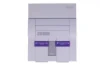

Lista de jogos Favoritos de acordo com a Plataforma:
Super Nintendo

- Super Mario World
- Donkey Kong
- Super Star Soccer
- Top Gear
- Goof Troop
- Side Pocket
- Sun Set Riders
Play Station
- Resident Evil
- Gran Turismo
- Pró Soccer Evolution
- Moto Racer
- Crash Bandicoot
- GTA
- Tenchu
PC
- Counter Strike
- Gunbound
- Need For Speed
- Batllefield
- Tibia
- Age of Empires
- Brasfoot